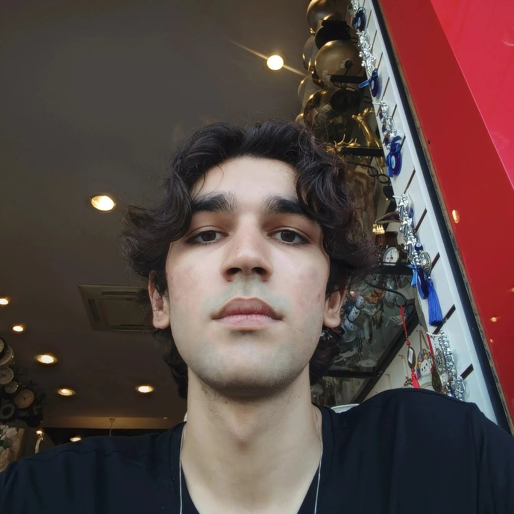

>_ COMPUTAÇÃO @ UNICAMP
[ Foco: Cibersegurança, Baixo Nível & IoT ]
_EXEC_GITHUB_PROFILEEstudante de Computação (TADS) na Unicamp e Técnico em Eletrônica. Meu perfil técnico é construído na intersecção entre software e hardware.
Com experiência prática no desenvolvimento de soluções em IoT (Internet das Coisas), busco desconstruir problemas complexos desde a arquitetura do circuito até o nível do sistema operacional, com forte foco em segurança e alta performance.
Implementação de algoritmos de baixo nível e análise de vulnerabilidades de sistemas.
_VIEW_REPOProjetos envolvendo microcontroladores, sensores e integração de hardware com sistemas web.
_VIEW_REPOEstruturas de dados otimizadas e scripts focados no uso eficiente de memória em C/C++.
_VIEW_REPO